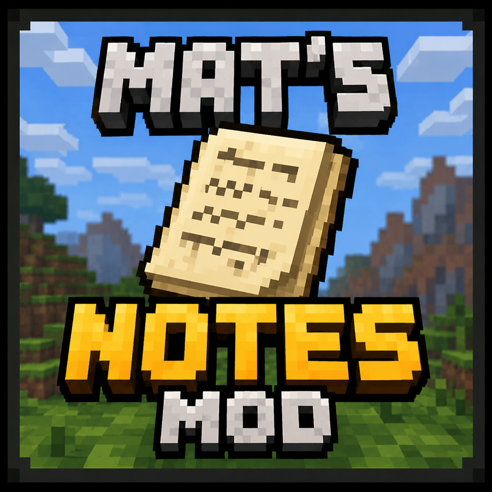

Minecraft Utility Mod
Mat's Notes
Having trouble remembering what to bring or what to do? With Mat's Notes, you can quickly write everything down without leaving Minecraft.
Keep your notes visible while you play so you never forget coordinates, tasks, building ideas or important reminders.
Customizable, lightweight and easy to use.
Live Preview

In-Game Notes
Create and edit notes without ever leaving Minecraft.
Always Visible
Display your notes while exploring, building or mining.
Unlimited Notes
Create as many notes as you need for every world and adventure.
Save Important Locations
Store coordinates, villages, Nether portals and anything worth remembering.
Fully Customizable
Adjust the interface and keybinds to fit your own playstyle.
Lightweight
Designed for excellent performance with minimal impact on your game.